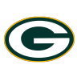

Kyren Williams has a toe injury, is expected to be ready for Wednesday
Another key offensive player for the Rams is dealing with an injury, but it is not expected to keep him from playing against the Packers on Thanksgiving Eve.


NFC North · National Football Conference · 40 headlines in the last 30 days
Another key offensive player for the Rams is dealing with an injury, but it is not expected to keep him from playing against the Packers on Thanksgiving Eve.

One Vikings player and one Packers player drew fines from the NFL for their actions in last week’s matchup.

After clearing waivers, running back Pierre Strong Jr. is back on the practice squad

Every single player in Green Bay was able to practice for the Packers, coming off their “mini-bye”

If the ground game is going anywhere, it’ll be because Kaleb Johnson drags it there.

Kobie Turner is set to return after the bye when Rams host Packers

Yahoo Sports' Nate Tice zeroes in on some of the overlooked standout groups this season, while also diving into the league's most stunningly underachieving offense.

Here is who the Packers have worked out this year and how/when they can become available to the team

The Packers made room for Micah Parsons' return on Thursday, waiving running back Pierre Strong Jr.

Assume that Pierre Strong Jr. will come back to the practice squad, if he’s able to clear waivers on Friday

What will be the Packers’ record over their remaining seven games of the season?

Joe Burrow keeps the top spot, Patrick Mahomes is back in the top five and Jordan Love is one of the biggest fallers

The two-year demise of the Packers' offensive line began on March 10, 2025 and has no end in sight.

For the first time this season, we have the same Super Bowl matchup two weeks in a row


Green Bay (mostly) dropped out of the top 10 this week after a poor performance against the Vikings

Mental mistakes really did Green Bay in early in the game

WR Coleman Owen cleared waivers, and the Packers have opened up a roster spot on their practice squad

It sure sounds like the Packers will try to get Micah Parsons ready to play for Thanksgiving Eve against the Rams

It was widely reported that edge rusher Micah Parsons was targeting the Week 12 game against the Rams for his return from reconstructive knee surgery.

Digging into some numbers from the Packers Week 10 loss to the Vikings

The Packers won to stay in their playoff spot, but the rest of the NFC had the same idea.

We're handing out grades for every team that played in Week 10

A key injury to Aidan Hutchinson will have a big impact on the NFC North race.

Cousins threw for 207 yards and two touchdowns in his first game with the team since 2023.

Green bay is adding insult to injury, and injury to insult, this season

Things sure did look different today

How fast can Kirk Cousins hit the ground running after being traded for on Tuesday?

Here's everything bettors need to know for Vikings vs. Packers in NFL Week 10

New Kalshi users can get a $55 bonus after making $25+ in trades on all of Sunday's NFL Week 10 action

One week after Kevin Zeitler got extended looks at right guard, he’s scratched

Who will be sitting this one out?

Kirk Cousins will play his first game with the Vikings since 2023.

DraftKings offers $200 in bonus bets and three free months of NBA League Pass after your first $5 wager for NFL betting on Sunday


The Packers will have two offensive players back in the lineup for Sunday's matchup with the Vikings.

TE Josh Whyle is going on the IR, while WR Coleman Owen was released

Can the Vikings have a productive offense on Sunday?

One week before the trade deadline, teams had interest in Titans running back Tony Pollard.